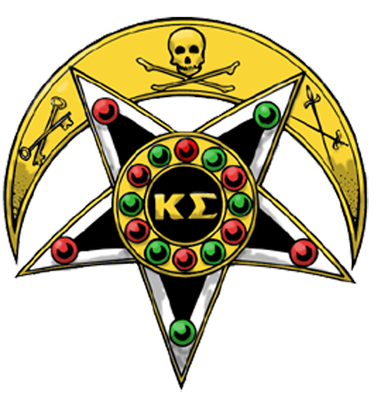

Welcome
Welcome to Kappa Sigma at Western University! Our chapter prides itself on fostering cohesion among unique men interested on individual and communal betterment. We are the thriving academics, the generous philanthropists, and the exceptional athletes... Interested in Rush?
President
"Welcome to Kappa Sigma at Western University! Our chapter prides itself on fostering cohesion among unique men interested in individual and communal betterment. Over 280,000 men have joined and enjoyed the unmatched experiences, involvement, and lifelong brotherhood that Kappa Sigma offers. There is no secret…our goal is to build better men.
Kappa Sigma strives to provide every member with the knowledge and skills necessary for success in the post-graduate world, as well as a brotherhood of support for life.
As Brothers, our members have an obligation to have a caring concern
for the welfare of our members. Brotherhood is a lifetime
commitment, which is why the Canadian Kappa Sigma Alumni base is one
of the most active Fraternity alumni groups in the country. We teach
young men social skills that will benefit them throughout their
lifetime. The multitude of leadership opportunities available
through the Fraternity prepares members for success in their chosen
careers. This is no secret when you join the largest, and oldest
Fraternity internationally."
The Xi-Nu Chapter of The Kappa Sigma Fraternity at Western University
Kappa Sigma is the largest college social fraternity in the world with more than 200,000 living members, including over 20,000 undergraduates and 327 chapters and colonies located throughout the United States and Canada as of 2018. Founded in 1869 at the University of Virginia, Kappa Sigma International Headquarters is based in Charlottesville, Virginia. Kappa Sigma is focused upon the Four Pillars of Fellowship, Leadership, Scholarship and Service. As a values-based men’s fraternity, Kappa Sigma strictly forbids hazing and fosters meaningful college experiences by offering progressive membership development and pledge education.
Fellowship
Fellowship is the bond between friends and brothers.
Leadership
Leadership is the obligation to do the right thing.
Scholarship
Scholarship is the responsibility of preparation for your future.
Service
Service is our duty to support our fellow man by our actions.
Our History
Find out about our Fraternity, mission, our methods, and the results of our years of advocacy.
Learn MoreThe Brothers
Take a look at our first ever official composite. Thank you to our friends at Lifetouch!
Check It Out